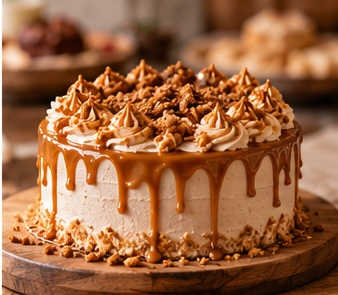

CONSEJOS DE CONSERVACIÓN
Cómo conservar tus tortas
Consejos para mantener tus preparaciones frescas.

Una correcta conservación ayuda a mantener la textura, frescura y sabor de las tortas después de la compra.
Refrigeración
Las preparaciones que contienen crema o rellenos que necesitan refrigeración deben mantenerse siempre en frío.
Antes de servir
Para disfrutar mejor una torta, recomendamos dejarla reposar algunos minutos antes de servirla, dependiendo de sus ingredientes.